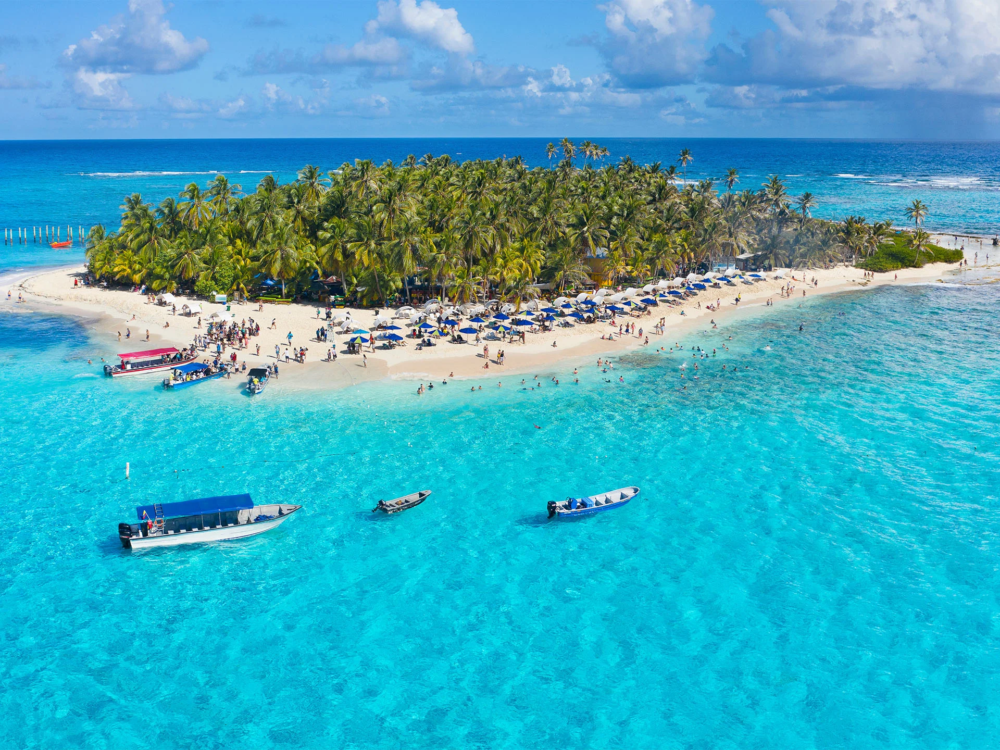
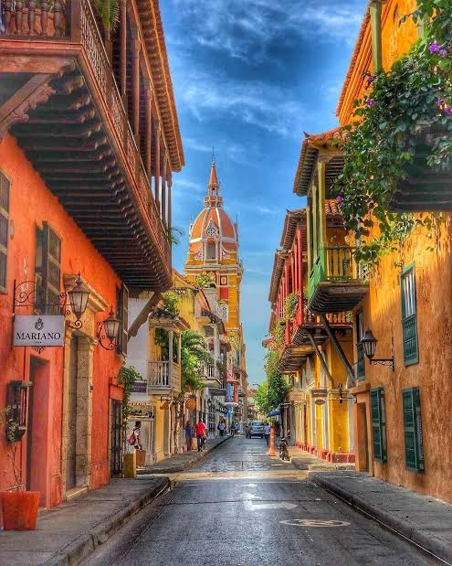
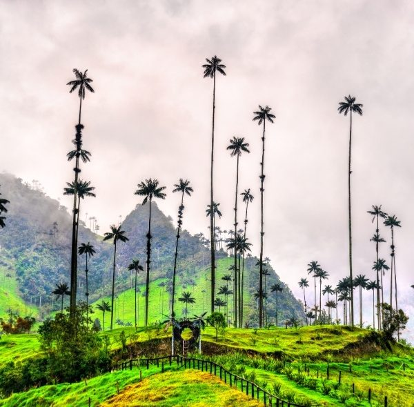
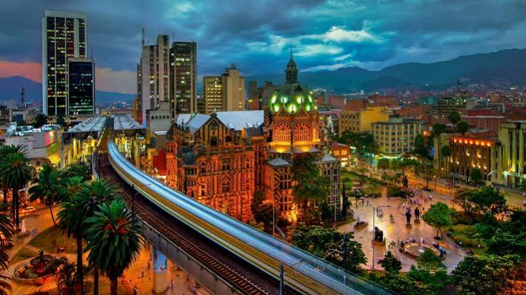
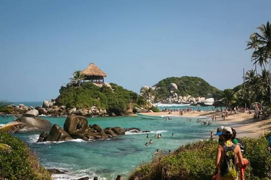
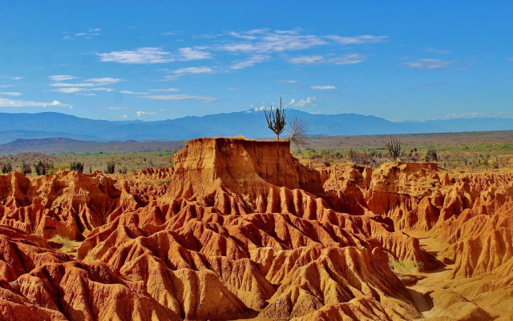
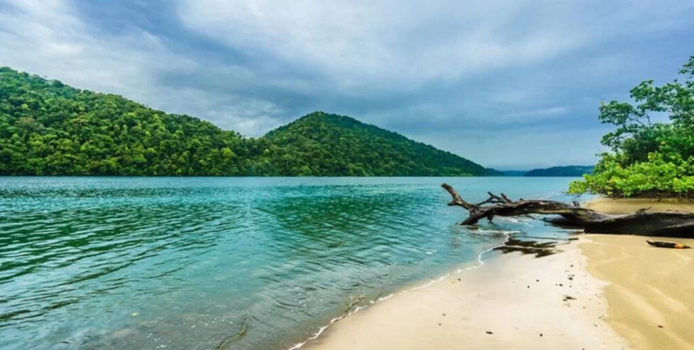
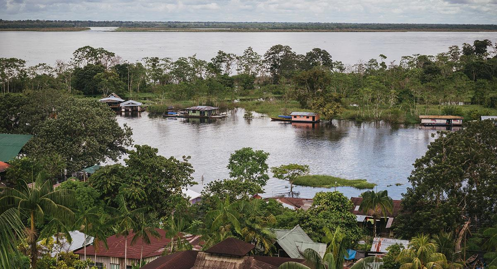
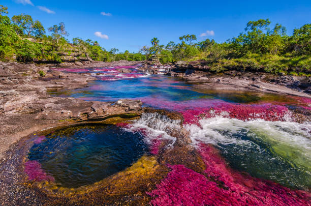

Descubre Colombia

San Andrés
San Andrés es un destino turístico popular en Colombia, conocido por sus playas de arena blanca, aguas cristalinas y arrecifes de coral. La isla ofrece actividades como snorkel, buceo y paseos en bote.

Cartagena de Indias
Famosa por su arquitectura colonial, sus coloridas calles dentro de la ciudad amurallada y sus hermosas playas. Un destino lleno de historia y encanto del Caribe colombiano.

Eje Cafetero
Hogar de las majestuosas palmas de cera en el Valle de Cocora y de las tradicionales fincas cafeteras. Ideal para los amantes de la naturaleza y el buen café.

Medellín
Conocida como la ciudad de la eterna primavera. Destaca por su innovación, cultura y eventos como la Feria de las Flores.

Parque Tayrona
Un paraíso donde la selva tropical se encuentra con el mar Caribe. Perfecto para hacer senderismo y disfrutar de playas rodeadas de naturaleza.

Desierto de la Tatacoa
Un impresionante paisaje árido en el Huila. Es uno de los mejores lugares de Colombia para el turismo astronómico y la observación de estrellas.

Bahía Solano
Ubicada en el Pacífico colombiano, es perfecta para el avistamiento de ballenas jorobadas, caminatas por la selva y el ecoturismo.

Leticia (Amazonas)
La puerta de entrada al Amazonas colombiano. Un destino fascinante para explorar la selva, navegar por el río y conocer su biodiversidad.

Caño Cristales
Conocido como el río de los cinco colores. Sus aguas cristalinas revelan plantas acuáticas de tonos rojos, amarillos y verdes.
Galería de imágenes
Explora algunos de los lugares más hermosos de Colombia.